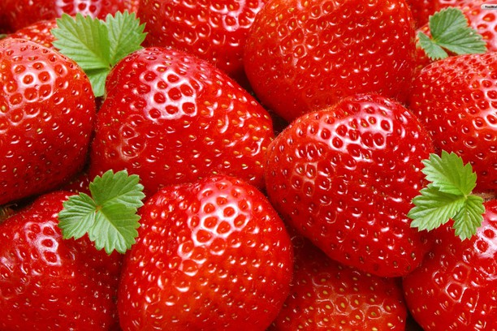

The strawberry is a widely grown hybrid species of the genus Fragaria, collectively known as the strawberries. It is cultivated worldwide for its fruit. The fruit is widely appreciated for its characteristic aroma, bright red color, juicy texture, and sweetness. It is consumed in large quantities, either fresh or in such prepared foods as preserves, juice, pies, ice creams, milkshakes, and chocolates. Artificial strawberry flavorings and aromas are also widely used in many products like lip gloss, candy, hand sanitizers, perfume, and many others.